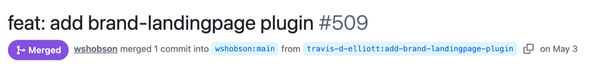
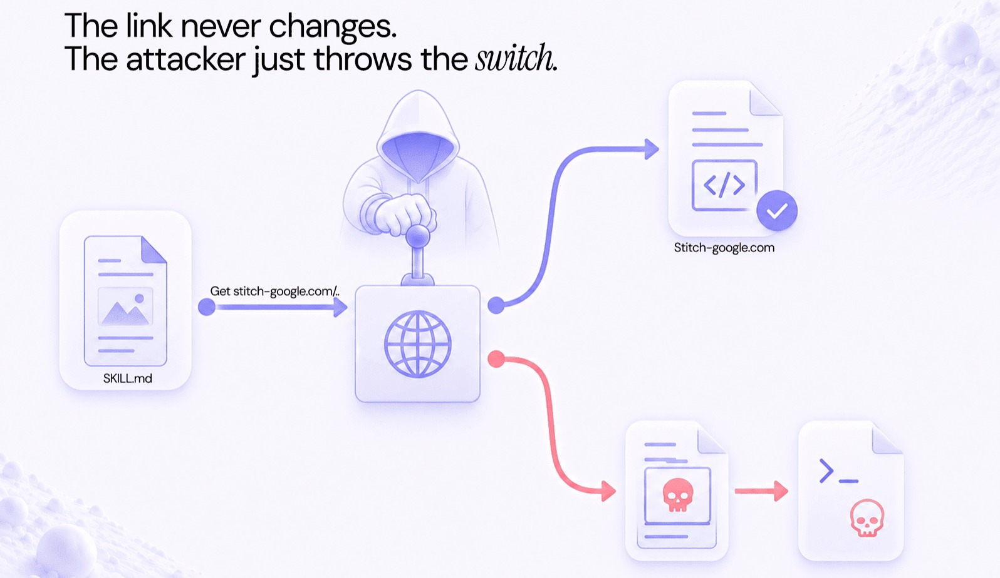

Claude Code Unleashed · Season 1 · Minggu 2
Arsenal Skills
#1
8 Skill yang Dipakai Tiap Hari
w02 · 110–120 menit · praktek di laptop masing-masing
§0 · Ekosistem skill 4 lapis
Skill = instruksi jadi FILE (SKILL.md: description = trigger, body = prosedur).
1
Built-in CLI
/code-review · /verify · /simplify
Sudah di laptopmu. Gratis. Jarang dipakai.
2
Resmi Anthropic
claude-plugins-official · frontend-design
Kurasi resmi — mulai dari sini kalau ragu.
3
Komunitas battle-tested
superpowers · caveman · ponytail
Puluhan ribu pemakai. Saring: stars + maintenance.
4
Internal Venturo
/grademe · venturo-arsenal (w07)
Spesifik kebutuhan kita — kita tulis sendiri.
Ketik instruksi sama ≥3×? Itu kandidat skill — kemungkinan sudah ada.
§0 · Audit-before-install · 3 langkah
Skill = instruksi yang dieksekusi agent dengan akses ke repo-mu. Install tanpa baca = kasih orang asing kunci kantor.
1Buka SKILL.md-nya sebelum install
2Baca description + scan body — ada rm / curl domain asing / akses kredensial?
3Cek sinyal sehat: stars · commit terakhir · section gotchas
§0 · Kasus nyata · skill "bersih" lolos semua scanner


"Link-nya tak berubah. Penyerang cukup menekan tuas."
reff: https://www.air.security/blog-posts/the-story-of-skills
JANGANPercaya bintang GitHub / hasil scan bersih sebagai restu tunggal.
JANGANJalankan instruksi yang menyuruh ambil "SDK"/script dari link luar.
JANGANAnggap aman selamanya — scan cuma memotret paket saat itu.
LAKUKANPerlakukan skill = software: vet penuh, bukan cuma baca teks.
LAKUKANCurigai tiap link/instruksi eksternal di SKILL.md.
LAKUKANPin versi + least-privilege; re-audit tiap ada update.
3 langkah audit tadi + waspadai link eksternal & re-cek setelah update → cara cek otomatisnya di slide berikut.
§0 · Alat cek mandiri · scan skill sebelum install
Jangan cuma baca mata telanjang — jalankan scanner. Riset: 26% skill rentan, 5% berniat jahat.
1
SkillSpector
NVIDIA · 68 pola / 17 kategori
Sebelum install — prompt-injection, exfiltrasi, supply-chain. skillspector scan ./skill/
2
skill-scanner + mcp-scanner
Cisco AI Defense
Static+bytecode+dataflow; hidden instructions & pola jahat + cek server MCP. skill-scanner scan ./skill --use-behavioral
3
claudit-sec
Harmonic · read-only
Audit yang sudah terpasang: MCP/plugin/hooks/skills. ./claude_audit.sh
4
/security-review
built-in Anthropic
Audit diff/kode sensitif — tanpa install. /security-review
Scan sebelum install + audit rutin yang sudah aktif — karena link bisa ditukar setelah lolos.
Teaser · Venturo Arsenal
8 skill + MCP (w05) + hooks (w07)
→ Venturo Arsenal
Terpasang seragam 1 perintah di w07. Hari ini kenalan satu-satu dulu.
§1 · find-skills8 menit
find-skills / npx skills
KENAPADiscovery murah sebelum tulis prompt berulang atau bikin skill sendiri.
JANGANLangsung /plugin install nama tebakan tanpa cari + baca dulu.
TRANSFERKebutuhan apa di project kerjamu yang belum pernah kamu cek dulu apakah sudah ada skill-nya?
Installtak perlu · jalan via npx
§2 · superpowers:brainstorming15 menit
brainstorming superpowers
KENAPARequirement kabur → tanya dulu, baru desain. Menolak coding sebelum approve (HARD-GATE).
JANGANPerubahan trivial 1 baris yang sudah jelas.
TRANSFERRequirement kabur apa di project kerjamu yang selama ini langsung kamu "build" tanpa nanya dulu?
Install/plugin install superpowers@claude-plugins-officialpin 6.1.1
§3a · superpowers:writing-plans18 menit
writing-plans
KENAPATask > 3 langkah → plan = task kecil ber-checkbox + langkah verifikasi.
JANGANEdit sepele 1 file — overhead plan tak sepadan.
Installsudah — bagian superpowers (§2)
§3b · superpowers:executing-planslanjutan §3
executing-plans
KENAPAJalankan plan per-task dengan checkpoint — review di antara task, bukan sekali telan.
CATATANYang dinilai = artefak plan + file kode, bukan go test hijau (itu w03).
TRANSFERTask >3 langkah di backlog kerjamu yang biasanya kamu embat sekaligus tanpa plan tertulis — yang mana?
Modepilih Inline Execution → checkpoint tiap task
✅ Checkpoint 1 · kartu 1–3
Siapa belum lihat spec ditulis (§2) & plan file ber-checkbox (§3)?
Pace 70% · asisten roaming — angkat tangan, kita samain dulu.
§4 · /code-review · built-in10 menit
/code-review built-in
KENAPAReview manual = bottleneck → agent berburu bug korektness + simplifikasi. Pola: smoke → /code-review → reviewer manusia.
JANGANJadikan pengganti test — itu /verify.
TRANSFERPR terakhirmu — kalau di-/code-review dulu sebelum reviewer manusia, kira-kira apa yang bakal ketangkep?
Installtak perlu · built-in CLI
§5 · superpowers:systematic-debugging14 menit
systematic-debugging
KENAPAIron Law: NO FIX WITHOUT ROOT CAUSE FIRST. 4 fase: root cause → pattern → 1 hipotesis → 1 fix.
JANGANLompat "coba ganti X" sebelum baca error & reproduksi.
TRANSFERBug misterius terakhir yang kamu tebak-tebak fix-nya — gimana kalau dijalankan Phase 1 root cause dulu?
Installsudah — bagian superpowers
§6 · caveman12 menit
caveman
KENAPAPangkas omongan (prosa output), substansi teknis utuh. /caveman-stats = angka hemat.
JANGANDokumen yang memang harus prosa penuh (rilis notes, materi non-teknis).
TRANSFERSesi kerja mana di project kamu yang paling sering bikin Claude cerewet & boros token?
Install/plugin marketplace add JuliusBrussee/caveman
/plugin install caveman@cavemanpin v1.9.1
✅ Checkpoint 2 · kartu 4–6
Siapa /code-review-nya belum keluar temuan berkategori? caveman-stats belum ada angka?
Pace 70% · nyangkut > 3 menit → ⚡ escape hatch, kejar pasca-sesi.
§7 · ponytail12 menit
ponytail
KENAPAYAGNI ladder: perlu ada? → stdlib? → native? → kode minimal. Tandai penanda ponytail:.
JANGANMemangkas validasi input / keamanan / error-handling.
TRANSFERKode hasil AI mana di project kamu yang kalau di-ponytail bisa dirampingin?
Install/plugin marketplace add DietrichGebert/ponytail
/plugin install ponytail@ponytailpin v4.8.4
§8 · ui-ux-pro-max / impeccable · intro8 menit
ui-ux-pro-max + impeccable
KENAPAUI "generik AI" → design intelligence (tipografi/spacing/motion). Backend → intro + install; pakai nyata di w07.
JANGANTask backend/logika — tak ada permukaan visual.
TRANSFERKomponen UI mana di project kamu yang paling "generik AI" dan siap dipolish di w07?
Install
/plugin marketplace add nextlevelbuilder/ui-ux-pro-max-skill
/plugin install ui-ux-pro-max@ui-ux-pro-max-skill
/npx impeccable install
§9 payoff · /grademe → leaderboard
/grademe nama-kamu
🌅 Challenge besok pagi · di project kerja nyata
1Pakai ≥ 2 skill baru dari hari ini
2Contoh: brainstorming (fitur baru) + /code-review (sebelum PR)
3Atau: caveman (sesi panjang) + systematic-debugging (saat bug)
4Lapor ke kanal tim — format di kanan
Format lapor
Skill dipakai : A, B
Task : 1 kalimat
Nempel? : skill mana + kenapa
Closing · Arsenal thread
8 skill = 1 lifecycle: ide → build
find-skills discovery
brainstorming spec
plan / execute rencana
/code-review review
debugging root cause
caveman hemat token
ponytail ramping
ui-ux-pro-max polish
Kait depan: w03 QA & Testing · w05 MCP · w07 rakit Venturo Arsenal — 1 perintah.
01 / 20
→ lanjut · ← mundur · ? bantuan